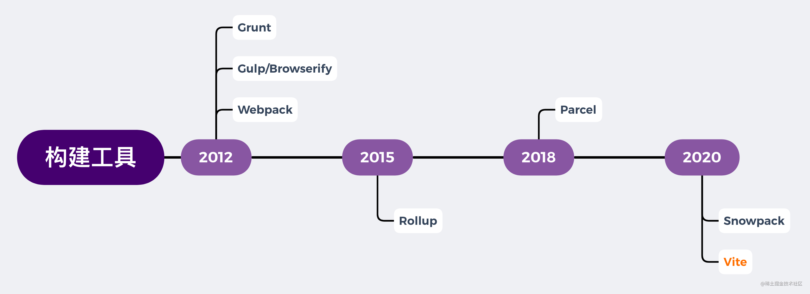
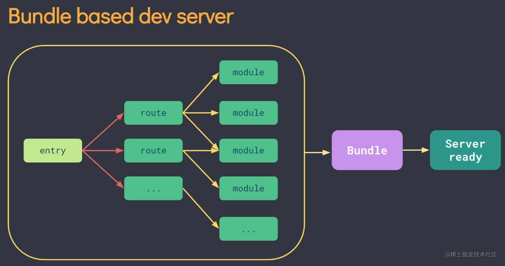
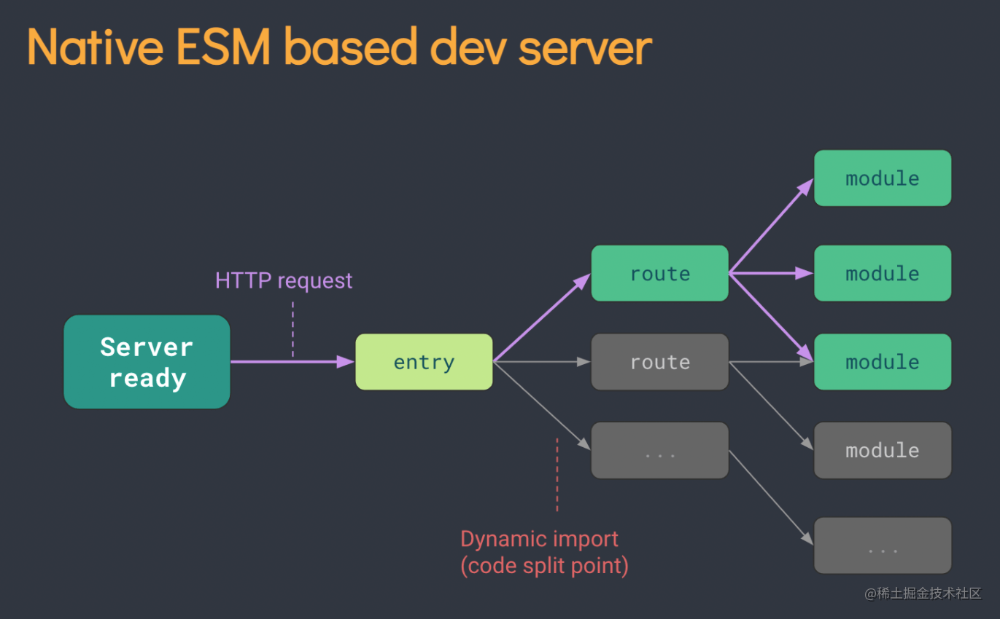
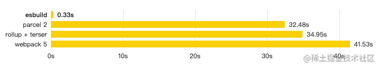
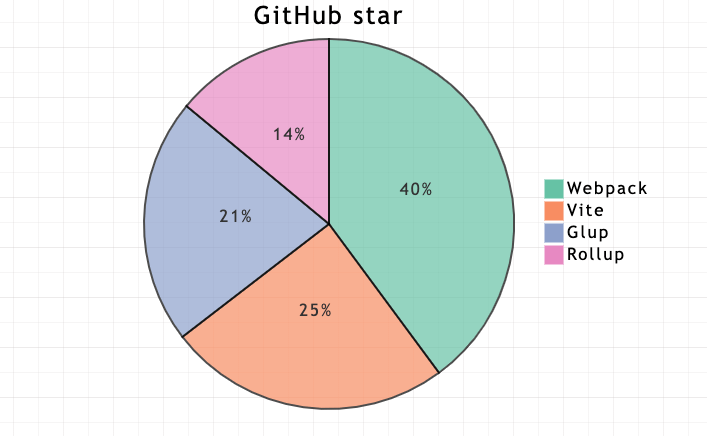

说下Vite的原理
参考答案
背景
这里的背景介绍会从与Vite紧密相关的两个概念的发展史说起，一个是JavaScript的模块化标准，另一个是前端构建工具。
共存的模块化标准
为什么JavaScript会有多种共存的模块化标准？因为js在设计之初并没有模块化的概念，随着前端业务复杂度不断提高，模块化越来越受到开发者的重视，社区开始涌现多种模块化解决方案，它们相互借鉴，也争议不断，形成多个派系，从CommonJS开始，到ES6正式推出ES Modules规范结束，所有争论，终成历史，ES Modules也成为前端重要的基础设施。
- CommonJS：现主要用于Node.js（Node@13.2.0开始支持直接使用ES Module）
- AMD：
require.js依赖前置，市场存量不建议使用 - CMD：
sea.js就近执行，市场存量不建议使用 - ES Module：ES语言规范，标准，趋势，未来
对模块化发展史感兴趣的可以看下[《前端模块化开发那点历史》@玉伯](https://github.com/seajs/seajs/issues/588 "《前端模块化开发那点历史》")，而Vite的核心正是依靠浏览器对ES Module规范的实现。
发展中的构建工具
近些年前端工程化发展迅速，各种构建工具层出不穷，目前Webpack仍然占据统治地位，npm 每周下载量达到两千多万次。下面是我按 npm 发版时间线列出的开发者比较熟知的一些构建工具。

当前工程化痛点
现在常用的构建工具如Webpack，主要是通过抓取-编译-构建整个应用的代码（也就是常说的打包过程），生成一份编译、优化后能良好兼容各个浏览器的的生产环境代码。在开发环境流程也基本相同，需要先将整个应用构建打包后，再把打包后的代码交给dev server（开发服务器）。
Webpack等构建工具的诞生给前端开发带来了极大的便利，但随着前端业务的复杂化，js代码量呈指数增长，打包构建时间越来越久，dev server（开发服务器）性能遇到瓶颈：
- 缓慢的服务启动： 大型项目中
dev server启动时间达到几十秒甚至几分钟。
- 缓慢的HMR热更新： 即使采用了 HMR 模式，其热更新速度也会随着应用规模的增长而显著下降，已达到性能瓶颈，无多少优化空间。
缓慢的开发环境，大大降低了开发者的幸福感，在以上背景下Vite应运而生。
什么是Vite？
基于esbuild与Rollup，依靠浏览器自身ESM编译功能， 实现极致开发体验的新一代构建工具！
概念
先介绍以下文中会经常提到的一些基础概念：
- 依赖： 指开发不会变动的部分(npm包、UI组件库)，esbuild进行预构建。
- 源码： 浏览器不能直接执行的非js代码(.jsx、.css、.vue等)，vite只在浏览器请求相关源码的时候进行转换，以提供ESM源码。
开发环境
- 利用浏览器原生的
ES Module编译能力，省略费时的编译环节，直给浏览器开发环境源码，dev server只提供轻量服务。 - 浏览器执行ESM的
import时，会向dev server发起该模块的ajax请求，服务器对源码做简单处理后返回给浏览器。 Vite中HMR是在原生 ESM 上执行的。当编辑一个文件时，Vite 只需要精确地使已编辑的模块失活，使得无论应用大小如何，HMR 始终能保持快速更新。- 使用
esbuild处理项目依赖，esbuild使用go编写，比一般node.js编写的编译器快几个数量级。
生产环境
- 集成
Rollup打包生产环境代码，依赖其成熟稳定的生态与更简洁的插件机制。
处理流程对比
Webpack通过先将整个应用打包，再将打包后代码提供给dev server，开发者才能开始开发。

Vite直接将源码交给浏览器，实现dev server秒开，浏览器显示页面需要相关模块时，再向dev server发起请求，服务器简单处理后，将该模块返回给浏览器，实现真正意义的按需加载。<br>

基本用法
创建vite项目
$ npm create vite@latest选取模板
Vite 内置6种常用模板与对应的TS版本，可满足前端大部分开发场景，可以点击下列表格中模板直接在 [StackBlitz](https://vite.new/ "StackBlitz") 中在线试用，还有其他更多的 [社区维护模板](https://github.com/vitejs/awesome-vite#templates "社区维护模板")可以使用。
| JavaScript | TypeScript |
|---|---|
| vanilla | vanilla-ts |
| vue | vue-ts |
| react | react-ts |
| preact | preact-ts |
| lit | lit-ts |
| svelte | svelte-ts |
启动
{
"scripts": {
"dev": "vite", // 启动开发服务器，别名：`vite dev`，`vite serve`
"build": "vite build", // 为生产环境构建产物
"preview": "vite preview" // 本地预览生产构建产物
}
}实现原理
ESbuild 编译
esbuild 使用go编写，cpu密集下更具性能优势，编译速度更快，以下摘自官网的构建速度对比： <br>浏览器：“开始了吗？” <br>服务器：“已经结束了。” <br>开发者：“好快，好喜欢！！”

依赖预构建
- 模块化兼容： 如开头背景所写，现仍共存多种模块化标准代码，
Vite在预构建阶段将依赖中各种其他模块化规范(CommonJS、UMD)转换 成ESM，以提供给浏览器。 - 性能优化： npm包中大量的ESM代码，大量的
import请求，会造成网络拥塞。Vite使用esbuild，将有大量内部模块的ESM关系转换成单个模块，以减少import模块请求次数。
按需加载
- 服务器只在接受到import请求的时候，才会编译对应的文件，将ESM源码返回给浏览器，实现真正的按需加载。
缓存
- HTTP缓存： 充分利用
http缓存做优化，依赖（不会变动的代码）部分用max-age,immutable 强缓存，源码部分用304协商缓存，提升页面打开速度。 - 文件系统缓存：
Vite在预构建阶段，将构建后的依赖缓存到node_modules/.vite，相关配置更改时，或手动控制时才会重新构建，以提升预构建速度。
重写模块路径
浏览器import只能引入相对/绝对路径，而开发代码经常使用npm包名直接引入node_module中的模块，需要做路径转换后交给浏览器。
es-module-lexer扫描 import 语法magic-string重写模块的引入路径
// 开发代码
import { createApp } from 'vue'
// 转换后
import { createApp } from '/node_modules/vue/dist/vue.js'源码分析
与Webpack-dev-server类似Vite同样使用WebSocket与客户端建立连接，实现热更新，源码实现基本可分为两部分，源码位置在:
vite/packages/vite/src/clientclient（用于客户端）vite/packages/vite/src/nodeserver（用于开发服务器）
client 代码会在启动服务时注入到客户端，用于客户端对于WebSocket消息的处理（如更新页面某个模块、刷新页面）；server 代码是服务端逻辑，用于处理代码的构建与页面模块的请求。
简单看了下源码（vite@2.7.2），核心功能主要是以下几个方法（以下为源码截取，部分逻辑做了删减）：
- 命令行启动服务
npm run dev后，源码执行cli.ts，调用createServer方法，创建http服务，监听开发服务器端口。
// 源码位置 vite/packages/vite/src/node/cli.ts
const { createServer } = await import('./server')
try {
const server = await createServer({
root,
base: options.base,
...
})
if (!server.httpServer) {
throw new Error('HTTP server not available')
}
await server.listen()
}createServer方法的执行做了很多工作，如整合配置项、创建http服务（早期通过koa创建）、创建WebSocket服务、创建源码的文件监听、插件执行、optimize优化等。下面注释中标出。
// 源码位置 vite/packages/vite/src/node/server/index.ts
export async function createServer(
inlineConfig: InlineConfig = {}
): Promise<ViteDevServer> {
// Vite 配置整合
const config = await resolveConfig(inlineConfig, 'serve', 'development')
const root = config.root
const serverConfig = config.server
// 创建http服务
const httpServer = await resolveHttpServer(serverConfig, middlewares, httpsOptions)
// 创建ws服务
const ws = createWebSocketServer(httpServer, config, httpsOptions)
// 创建watcher，设置代码文件监听
const watcher = chokidar.watch(path.resolve(root), {
ignored: [
'**/node_modules/**',
'**/.git/**',
...(Array.isArray(ignored) ? ignored : [ignored])
],
...watchOptions
}) as FSWatcher
// 创建server对象
const server: ViteDevServer = {
config,
middlewares,
httpServer,
watcher,
ws,
moduleGraph,
listen,
...
}
// 文件监听变动，websocket向前端通信
watcher.on('change', async (file) => {
...
handleHMRUpdate()
})
// 非常多的 middleware
middlewares.use(...)
// optimize
const runOptimize = async () => {...}
return server
}- 使用[chokidar](https://www.npmjs.com/package/chokidar "chokidar")监听文件变化，绑定监听事件。
// 源码位置 vite/packages/vite/src/node/server/index.ts
const watcher = chokidar.watch(path.resolve(root), {
ignored: [
'**/node_modules/**',
'**/.git/**',
...(Array.isArray(ignored) ? ignored : [ignored])
],
ignoreInitial: true,
ignorePermissionErrors: true,
disableGlobbing: true,
...watchOptions
}) as FSWatcher- 通过 [ws](https://www.npmjs.com/package/ws "ws") 来创建
WebSocket服务，用于监听到文件变化时触发热更新，向客户端发送消息。
// 源码位置 vite/packages/vite/src/node/server/ws.ts
export function createWebSocketServer(...){
let wss: WebSocket
const hmr = isObject(config.server.hmr) && config.server.hmr
const wsServer = (hmr && hmr.server) || server
if (wsServer) {
wss = new WebSocket({ noServer: true })
wsServer.on('upgrade', (req, socket, head) => {
// 服务就绪
if (req.headers['sec-websocket-protocol'] === HMR_HEADER) {
wss.handleUpgrade(req, socket as Socket, head, (ws) => {
wss.emit('connection', ws, req)
})
}
})
} else {
...
}
// 服务准备就绪，就能在浏览器控制台看到熟悉的打印 [vite] connected.
wss.on('connection', (socket) => {
socket.send(JSON.stringify({ type: 'connected' }))
...
})
// 失败
wss.on('error', (e: Error & { code: string }) => {
...
})
// 返回ws对象
return {
on: wss.on.bind(wss),
off: wss.off.bind(wss),
// 向客户端发送信息
// 多个客户端同时触发
send(payload: HMRPayload) {
const stringified = JSON.stringify(payload)
wss.clients.forEach((client) => {
// readyState 1 means the connection is open
client.send(stringified)
})
}
}
}- 在服务启动时会向浏览器注入代码，用于处理客户端接收到的
WebSocket消息，如重新发起模块请求、刷新页面。
//源码位置 vite/packages/vite/src/client/client.ts
async function handleMessage(payload: HMRPayload) {
switch (payload.type) {
case 'connected':
console.log(`[vite] connected.`)
break
case 'update':
notifyListeners('vite:beforeUpdate', payload)
...
break
case 'custom': {
notifyListeners(payload.event as CustomEventName<any>, payload.data)
...
break
}
case 'full-reload':
notifyListeners('vite:beforeFullReload', payload)
...
break
case 'prune':
notifyListeners('vite:beforePrune', payload)
...
break
case 'error': {
notifyListeners('vite:error', payload)
...
break
}
default: {
const check: never = payload
return check
}
}
}优势
- 快！快！非常快！！
- 高度集成，开箱即用。
- 基于ESM急速热更新，无需打包编译。
- 基于
esbuild的依赖预处理，比Webpack等node编写的编译器快几个数量级。 - 兼容
Rollup庞大的插件机制，插件开发更简洁。 - 不与
Vue绑定，支持React等其他框架，独立的构建工具。 - 内置SSR支持。
- 天然支持TS。
不足
Vue仍为第一优先支持，量身定做的编译插件，对React的支持不如Vue强大。- 虽然已经推出2.0正式版，已经可以用于正式线上生产，但目前市场上实践少。
- 生产环境集成
Rollup打包，与开发环境最终执行的代码不一致。
与 webpack 对比
由于Vite主打的是开发环境的极致体验，生产环境集成Rollup，这里的对比主要是Webpack-dev-server与Vite-dev-server的对比：
- 到目前很长时间以来
Webpack在前端工程领域占统治地位，Vite推出以来备受关注，社区活跃，GitHub star 数量激增，目前达到37.4K

Webpack配置丰富使用极为灵活但上手成本高，Vite开箱即用配置高度集成Webpack启动服务需打包构建，速度慢，Vite免编译可秒开Webpack热更新需打包构建，速度慢，Vite毫秒响应Webpack成熟稳定、资源丰富、大量实践案例，Vite实践较少Vite使用esbuild编译，构建速度比webpack快几个数量级
兼容性
- 默认目标浏览器是在
script标签上支持原生 ESM 和 原生 ESM 动态导入 - 可使用官方插件
@vitejs/plugin-legacy，转义成传统版本和相对应的polyfill
未来探索
- 传统构建工具性能已到瓶颈，主打开发体验的
Vite，可能会受到欢迎。 - 主流浏览器基本支持ESM，ESM将成为主流。
Vite在Vue3.0代替vue-cli，作为官方脚手架，会大大提高使用量。Vite2.0推出后，已可以在实际项目中使用Vite。- 如果觉得直接使用
Vite太冒险，又确实有dev server速度慢的问题需要解决，可以尝试用Vite单独搭建一套dev server
相关资源
官方插件
除了支持现有的Rollup插件系统外，官方提供了四个最关键的插件
@vitejs/plugin-vue提供 Vue3 单文件组件支持@vitejs/plugin-vue-jsx提供 Vue3 JSX 支持（专用的 Babel 转换插件）@vitejs/plugin-react提供完整的 React 支持@vitejs/plugin-legacy为打包后的文件提供传统浏览器兼容性支持
Vite 是一个基于 ESbuild 和 Rollup 的新一代前端构建工具，它旨在提供极致的开发体验。Vite 的工作原理包括依赖预构建、按需加载和文件系统缓存等，这些特性使得 Vite 在开发环境中能够快速启动和响应。Vite 的主要特点包括：
- 快速启动：Vite 利用浏览器原生的 ES Module 解析能力，直接提供开发环境源码，无需等待整个应用的构建。
- 按需编译：Vite 只在浏览器请求相关模块时进行编译，从而实现真正的按需加载。
- 依赖预构建：Vite 使用 esbuild 对项目依赖进行预构建，以提高编译速度。
- 缓存优化：Vite 利用 HTTP 缓存和文件系统缓存来优化性能。
- 生产环境集成：Vite 集成 Rollup 进行生产环境打包，提供成熟的插件机制。
- 高度集成：Vite 提供了开箱即用的配置，简化了开发流程。
- 支持多种框架：Vite 不仅支持 Vue，也支持 React 等其他框架。
- 内置 SSR 支持：Vite 内置了服务端渲染支持。
- TypeScript 支持：Vite 原生支持 TypeScript。
Vite 与 Webpack 的主要区别在于 Vite 更注重开发环境的性能，而 Webpack 则提供了更丰富的配置和更灵活的构建流程。尽管 Vite 在生产环境中使用 Rollup 打包，但它的开发环境体验已经足够强大，适合大多数前端开发需求。